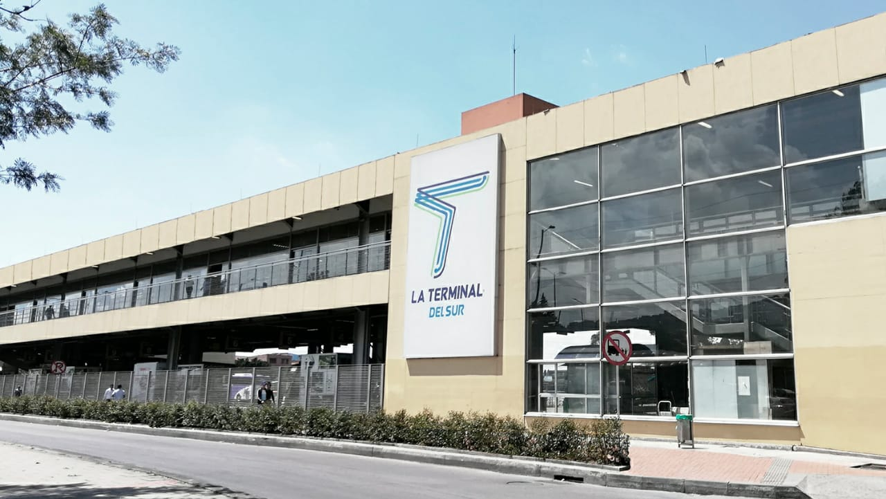
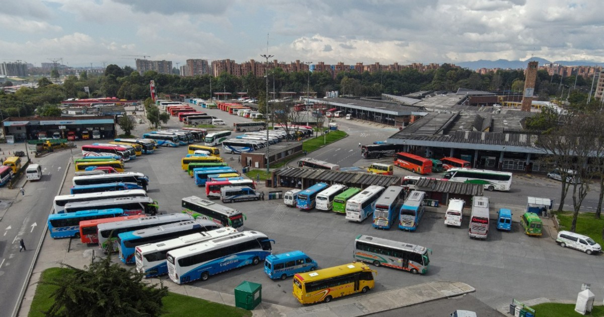

Estudiantes:
Emmanuel Santiago Fernández López
Yuliana Moreno Pérez
Albert Daniel Ramírez García
Brayhan Sty Rodriguez Rueda
María Alejandra Urrea Peña


Terminal de transportes
Inició operaciones el 14 de marzo de 1984 y se ha consolidado como el centro de interconexión terrestre más importante de Colombia.
Puntos clave de la entidad
- Naturaleza jurídica: Es una entidad de segundo grado con personería jurídica, autonomía administrativa y patrimonio propio, regida por las reglas del derecho privado.
- Misión estratégica: Su propósito principal es estructurar y operar soluciones de movilidad, actuando como un aliado estratégico para la ciudad.
- Certificaciones: Es la primera terminal terrestre en Colombia en recibir certificaciones de calidad y bioseguridad por parte del ICONTEC, incluyendo gestión ambiental y seguridad de la información.
- Diversificación: Además de la gestión de pasajeros en sus tres sedes (Salitre, Norte y Sur), la empresa opera otras unidades de negocio como una red de estacionamientos y plataformas logísticas.
- Vigilancia: Sus actividades están sujetas al control de la Superintendencia de Transporte.
Noticias
Con 32 parqueaderos y la ampliación a más de 13.000 cupos de estacionamiento en vía, La Terminal de Transporte de Bogotá se consolida en el 2026 como el principal operador
Bogotá, 14 de marzo de 2026 (@TerminalBogota @ZonaParqueoPago).
La oferta de estacionamiento autorizado en la ciudad seguirá creciendo este año, gracias a que La Terminal de Transporte de Bogotá proyecta superar los más de 13.000 cupos habilitados, con la llegada de las Zonas de Parqueo Pago (ZPP) a tres nuevas localidades y la expansión de su red de parqueaderos fuera de vía.
La medida se complementa con la actualización de tarifas definida por la Secretaría Distrital de Movilidad (SDM), en línea con la normatividad vigente, con el objetivo de garantizar la sostenibilidad del servicio, fortalecer la gestión del espacio público y la continuidad de una oferta formal, regulada y segura para los usuarios.
"Desde La Terminal de Transporte de Bogotá continuamos consolidando un modelo de estacionamiento organizado, seguro y tecnológicamente robusto, tanto en vía como fuera de vía. La expansión del sistema y la actualización tarifaria nos permiten garantizar un servicio sostenible, con mayor cobertura y beneficios para la ciudadanía”, asegura Rafael González, gerente general de La Terminal de Transporte de Bogotá."